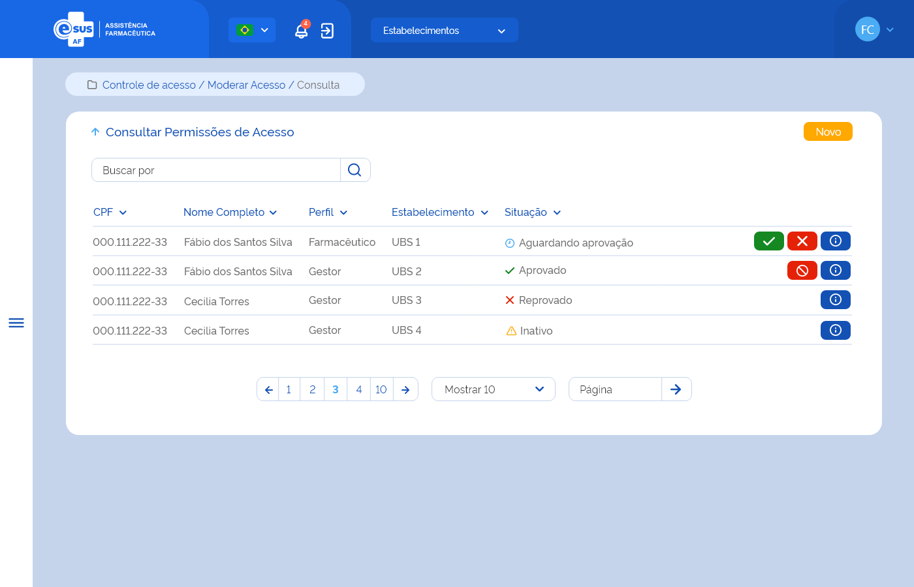
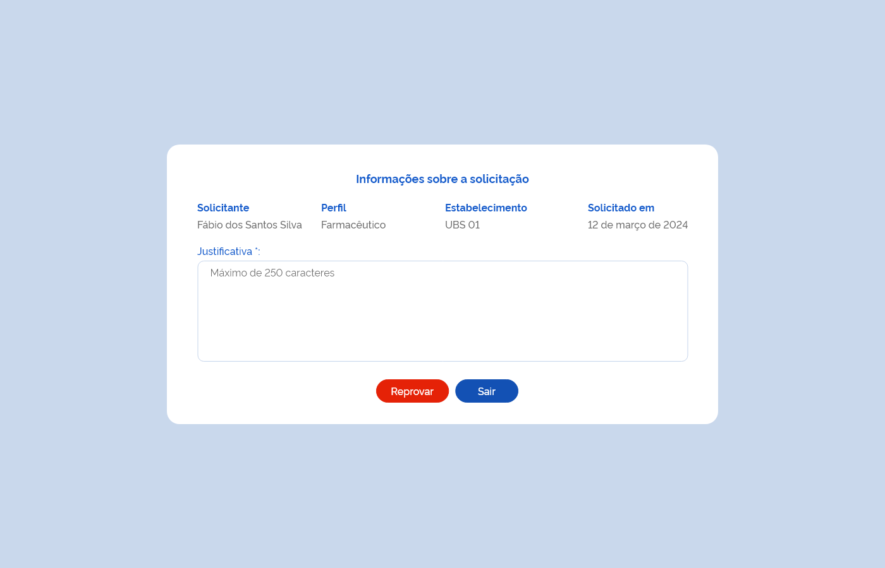
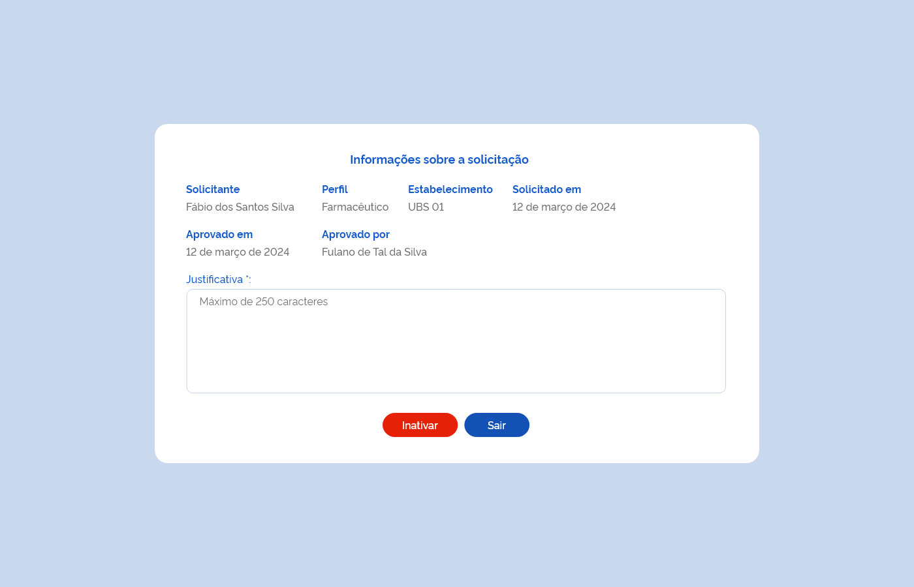

Especificação Técnica 004 - Consultar Permissões de Acesso
Descrição
Como usuário quero consultar as permissões de acesso para moderá-las.
Protótipo 001

Elementos de Tela:
- Bread Crumb – “Controle de Acesso / Moderar Acesso / Consulta”
- Título da página – “Consultar Permissões de Acesso”
- “Seta” – M - retorna para a Tela Inicial/Dashboard
- “Novo” – BT - direciona para a Tela de Atribuir Perfil de Acesso
- Buscar por – A / AC
- Lista de permissões de acesso
- CPF – N (11)
- Nome – A (50)
- Perfil – A (50)
- Estabelecimento – A (50)
- Situação – A (50)
- “Aprovar” – BT
- “Reprovar” – BT
- “Inativar” – BT
- “Detalhar” – BT
- Ordenação nas colunas
- Paginação
- Registro por página
- Ir para página
Legenda
TIPO: A = Alfanumérico, N = Numérico, D = Data, M = Imagem, BT = Botão, LK = Link, SU = Seleção Única, SM = Seleção Múltipla, AC = Autocomplete, * = Obrigatório.
Critérios de aceite
- O usuário somente poderá acessar a funcionalidade caso tenha permissão; RGN001
- O acesso à funcionalidade é dado através do menu lateral no item “Controle de Acesso”, quando acionar o subitem “Moderar Perfil”;
- O sistema deve recuperar e apresentar a relação das permissões de acesso por usuário ordenando os registros por status “Aguardando Aprovação” e data decrescente do registro. Caso algum campo retorne vazio, o sistema deve apresentar a descrição “-”;
- O sistema deve apresentar a relação das permissões de acesso por usuário com os dados: CPF, Nome Completo, Perfil, Estabelecimento, Situação e as ações desejáveis para cada registro;
- As grids com resultados de consultas devem permitir a ordenação por coluna, paginação, seleção de registro por página e filtrar o resultado da consulta. RGN004
- O sistema deve apresentar as ações observando o perfil solicitado e a situação do registro conforme:
- Para perfil “Instalador” a opção “Detalhar” para todas as permissões de acesso, inclusive as dos perfis personalizados;
- Para perfil “Administrador”:
- A opção “Inativar” para permissões de acesso com perfil “Administrador” e “Gestor” atribuídos por ele;
- A opção “Detalhar” para todas as permissões de acesso, inclusive as dos perfis personalizados.
- Para perfil “Gestor”:
- As opções “Aprovar”, “Reprovar” e “Inativar” para todas as permissões de acesso exceto do perfil de “Administrador”;
- A opção “Detalhar” para todas as permissões de acesso, inclusive as dos perfis personalizados.
- Para perfil “Gestor Estabelecimento”:
- As opções “Aprovar”, “Reprovar” e “Inativar” para todas as permissões de acesso relacionadas ao seu estabelecimento;
- A opção “Detalhar” para todas as permissões de acesso, inclusive as dos perfis personalizados.
- Para registro com situação “Aguardando Aprovação”, as opções “Aprovar”, “Reprovar” e “Detalhar”;
- Para registro com situação “Aprovado”, as opções “Inativar” e “Detalhar”;
- Para registro com situação “Reprovado” ou “Inativo”, a opção “Detalhar”. RGN052
- Quando o usuário acionar a opção “Novo”, o sistema deve direcionar para a tela de atribuição de um perfil para um usuário específico; ETE005
- Quando o usuário acionar a opção “Aprovar”, o sistema deve apresentar mensagem de confirmação ao usuário. Caso confirme a ação, o sistema aprova o acesso ao sistema, grava o estado do registro como “Ativo” e a situação como “Aprovado”, envia um e-mail informativo ao solicitante, apresenta a mensagem de sucesso e permanece na tela de consultar permissões de acesso. Caso a ação não seja confirmada, permanece na tela de consultar permissões de acesso; MSG080 MSG081 MSG082
- Quando o usuário acionar a opção “Reprovar”, o sistema apresenta a tela de inclusão de justificativa para reprovação; Protótipo 002
- Quando o usuário acionar a opção “Inativar”, o sistema apresenta a tela de inclusão de justificativa para inativação; Protótipo 003
- Para permissões de acesso com situação:
- “Solicitado” o sistema deve permitir aprovar ou reprovar;
- “Aprovado” o sistema deve permitir inativar;
- “Reprovado” ou “Inativo” o sistema não deve permitir aprovar ou reativar, sendo necessário realizar uma nova solicitação. RGN013
- O sistema deve gravar a data, hora e CPF e nome do usuário que a executou qualquer ação de alteração no estado do registro. RGN005
Protótipo 002

Elementos de tela
- Título da página – “Informações sobre a solicitação”
- “Solicitante” – A (50)
- “Solicitado em” – D (DD/MM/AAAA)
- “Perfil” – A (50)
- “Estabelecimento” – A (50)
- “Justificativa*” – A (250)
- “Reprovar” – BT
- “Sair” – BT
Legenda
TIPO: A = Alfanumérico, N = Numérico, D = Data, M = Imagem, BT = Botão, LK = Link, SU = Seleção Única, SM = Seleção Múltipla, AC = Autocomplete, * = Obrigatório.
Critérios de aceite
- O acesso à funcionalidade é dado através do menu lateral no item “Controle de Acesso”, subitem “Moderar Perfil”, na tela “Consultar Permissões de Acesso” quando acionar a opção “Reprovar”;
- O sistema deve recuperar e apresentar os dados da solicitação de permissão de acesso. Caso algum campo retorne vazio, o sistema deve apresentar a descrição “-”;
- O sistema deve apresentar a solicitação de permissão de acesso com os dados: Solicitante, Solicitado em, Perfil, Estabelecimento e o campo para inclusão da justificativa;
- O usuário ao reprovar uma solicitação de permissão de acesso ao sistema, deve informar uma justificativa; RGN053
- Quando o usuário acionar a opção “Reprovar”, o sistema deve reprovar a solicitação de permissão de acesso, alterar o estado do registro para “Inativo” e a situação para “Reprovado”, enviar um e-mail informativo ao solicitante, apresentar a mensagem de sucesso e permanecer na tela de consultar permissões de acesso; MSG082 MSG083 RGN005
- Quando o usuário acionar a opção “Sair”, o sistema retorna para a tela de consultar permissões de acesso;
- sistema deve gravar a data, hora e CPF e nome do usuário que a executou qualquer ação de alteração no estado do registro. RGN005
Protótipo 003

Elementos de tela
- “Solicitante” – A (50)
- “Solicitado em” – D (DD/MM/AAAA)
- “Aprovado em” – D (DD/MM/AAAA)
- “Aprovado por” – A (50)
- “Perfil” – A (50)
- “Estabelecimento” – A (50)
- “Justificativa*” – A (250)
- “Inativar” – BT
- “Sair” – BT
Legenda
TIPO: A = Alfanumérico, N = Numérico, D = Data, M = Imagem, BT = Botão, LK = Link, SU = Seleção Única, SM = Seleção Múltipla, AC = Autocomplete, * = Obrigatório.
Critérios de aceite
- O acesso à funcionalidade é dado através do menu lateral no item “Controle de Acesso”, subitem “Moderar Perfil”, na tela “Consultar Permissões de Acesso” quando acionar a opção “Inativar”;
- O sistema deve recuperar e apresentar os dados da solicitação de permissão de acesso. Caso algum campo retorne vazio, o sistema deve apresentar a descrição “-”;
- O sistema deve apresentar a solicitação de permissão de acesso com os dados: Solicitante, Solicitado em, Aprovado em, Aprovado por, Perfil, Estabelecimento e o campo para inclusão da justificativa;
- O usuário ao inativar uma solicitação de permissão de acesso ao sistema, deve informar uma justificativa; RGN053
- Quando o usuário acionar a opção “Inativar”, o sistema deve inativar a solicitação de permissão de acesso, alterar o estado do registro para “Inativo” e a situação para “Inativado”, enviar um e-mail informativo ao solicitante, apresentar a mensagem de sucesso e permanecer na tela de consultar permissões de acesso; MSG082 MSG084 RGN005
- Quando o usuário acionar a opção “Sair”, o sistema retorna para a tela de consultar permissões de acesso;
- sistema deve gravar a data, hora e CPF e nome do usuário que a executou qualquer ação de alteração no estado do registro. RGN005